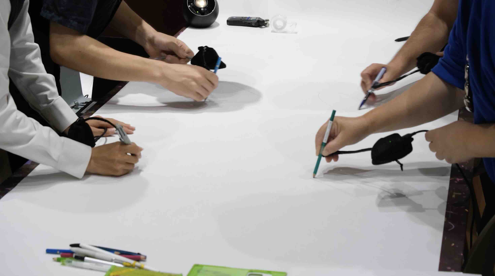

Project — 2026
絵画を聴く

プロジェクトについて
Overview絵画に、その中に鳴っていたかもしれない音の風景を重ね、視覚や言葉によらず誰もが共に鑑賞できる、 新たな体験をつくる。
「絵画を聴く」は、絵画から音をつくる仕組みを、作品・研究・プロダクトを横断して実践するプロジェクトである。 研究での検証を重ねながら、非言語型音声ガイドとしての社会実装を目指している。
つくる仕組み
作品
インスタレーション／ワークショップ
研究
学会発表／VR・HCI
プロダクト
新しい美術館の音声ガイド
きっかけ
Motivationとびらプロジェクトで出会った全盲の友人と、共に作品を鑑賞した経験にある。
言葉による説明だけでは伝えきれない感覚があることに気づいた。既存の音声ガイドの多くは、日本語が使え、 目が見えることを前提に設計されている。晴眼者であっても、作品そのものよりキャプションを見ている時間の 方が長いというデータがあり（Smith et al., 2017の鑑賞時間調査）、既存の鑑賞体験は視覚・言語に偏りすぎている。
大学で学ぶフランス近現代の美術史と、課外で重ねてきたサウンドアートの実践。この2つの領域を結びつければ、 音で絵画を拡張した鑑賞をつくれるのではないかと考えた。最初に目指した3つの問いは、「絵画を聴く インスタレーション」のページで詳しく紹介している。
体験のデザイン
Experience木枠に振動スピーカーと距離センサーを組み込んだインスタレーションとして、5月のASIBA DEMO DAYで発表した。
音を流す
絵が描かれた当時の環境をリサーチし、Unity上でつくった音を作曲・加工して流す。
構図で変わる
距離センサーが手の位置を検知し、絵の構図に応じて聞こえる音を変化させる。
触覚で感じる
振動スピーカーが音を振動に変換し、視覚に頼らず体で感じられるようにする。

木枠に組み込んだ振動スピーカー。「流れていく」音楽に構図性を与え、音を手触りで感じる。
作曲法
Composition絵画から音を抽出し、AIとUnityで構図に合わせて配置し、質感に合わせて仕上げる。
音響要素の抽出
モネ《睡蓮》の文献調査から、水音・植物音・生物音・鳥の声など33の音を洗い出す。
AIで効果音生成
ElevenLabsの音声生成技術で、それぞれの音響要素を個別のデジタル音源にする。
Unityで音を配置
絵の構図に合わせ3D空間上に配置。発生確率を連動させ「鳴り続ける環境」にする。
質感に合わせ作曲
筆致や色の重なりに音を合わせ込み、インスタレーションの音響基盤に仕上げる。


左：Unity上での音源配置と制御。右：質感に合わせた加工と作曲の作業風景。
コンセプト
活動タイムライン
Timeline実践・アウトプット
Practiceインスタレーション、ワークショップ、鑑賞会、学会論文として、それぞれの場に合わせて展開してきた。




地衣類（共生体）の「気配」をテーマにしたセンサー装置（ミキキの交差点）。
体験者の声
Voices視覚の有無に関わらず、同じ空間性・実在感を共有できる可能性が示唆された。
独自性・実現したい未来
Visionデータ変換でも言語でもなく、聴き手それぞれの解釈の余白を残したまま、直感的に絵画空間を体感できる 新しい鑑賞のかたちをつくること。
絵画は、見る人によって感じ方が変わる主観的なメディアである。絵画を音に「正確に」変換するという発想 自体を手放し、絵の中にあったかもしれない音を想像して作曲するという、正解のない作り方に軸足を置いている。
視覚の程度や言語・文化的背景に関わらず、多様な人々が同じ場で体験を交換し合える環境をつくりたい。 鑑賞体験を共有する過程そのものが対話となり、背景の違いを超えたコミュニケーションが生まれる状態を 目指している。
協力
NTTソノリティ（イヤホン機材提供）、美学校（ワークショップ会場提供）、三菱鉛筆（画材・会場提供）、 100BANCH GARAGE Program（展示会場提供・プログラム採択）、ASIBA Creative League（メンタリング・ プログラム採択）、東京都盲人福祉協会（鑑賞会実施への協力）。
2026.9.19 FRI – 9.23 WED GALLERY工+WITH（新高円寺駅徒歩3分）。「絵画を聴く」の展示に加え、新作も発表する。